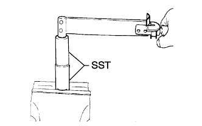

ТОПЛИВНАЯ ФОРСУНКА > ПОВТОРНАЯ СБОРКА |
| 1. INSTALL NOZZLE RETAINING NUT |
|  |
Install the pressure pin, distance piece and nozzle assembly to the nozzle retaining nut.
Install the nozzle holder pressure spring and adjusting shim, and then temporarily install the nozzle holder to the nozzle retaining nut.
Using SST, tighten the nozzle retaining nut.
Inspect the holder and nozzle set.
| 2. INSTALL RING PACKING SETTING NUT |
Install a new washer and the ring packing setting nut.